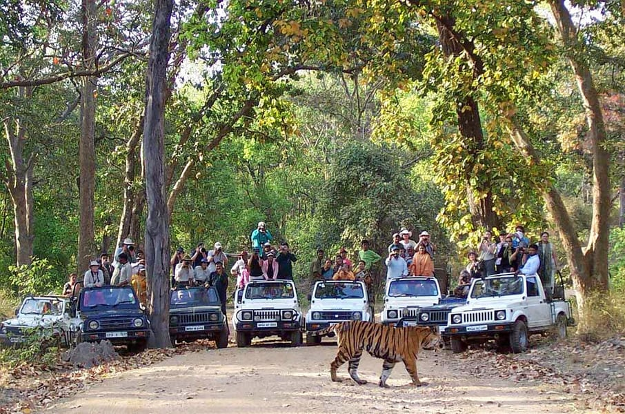
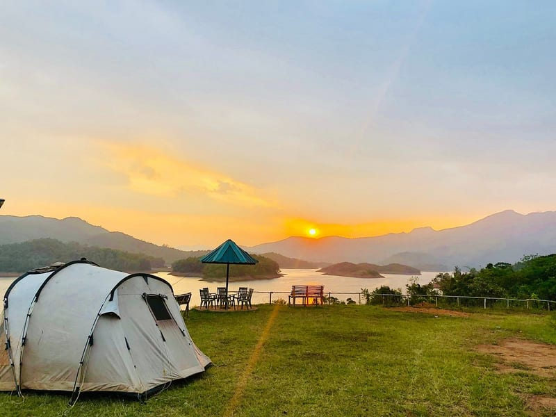
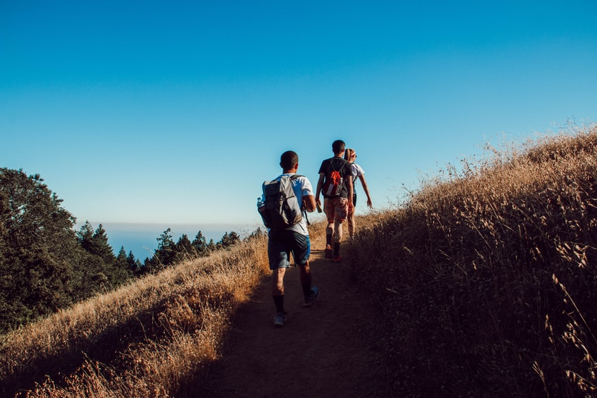

Services | Home | Bookings | Contact us |
|---|
|
Jeep Safari Are you looking to get an escape from the busy schedules and hide in the lap of nature? This Jeep Safari from Munnar to Vattavada will serve your purpose. Munnar is nestled in the lap of some of the most beautiful stretches of hills and wild greens in India. With roads traversing through valleys and hills, a jeep ride through here would be the perfect adventure to have here. Rate:INR2000 |
 |
|---|---|
|
Forest Camping Enjoy an exquisite camping experience near the largest dam in India- The Banasura dam Take part in various games and activities such as nature walk, archery, fishing, badminton, basketball Sit in a warm bonfire session in the evening under the star-studded sky & have fun! Rate:INR2500 |
 |
|
Jeep Safari Eminent as the "God's Own Country", trekking in Kerala is a rejuvenating affair. Beginning with picturesque vistas to exotic flora-fauna, every trekking trail in Kerala has something unique to offer to nature lovers. Lush greenery, misty hills, cascading waterfalls and cotton ball clouds mainly dominate the landscape. Rate:INR1000 |
 |